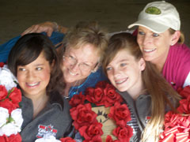
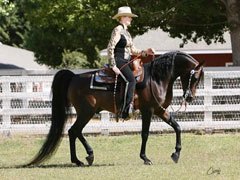

Highland Pride Arabians is a family owned farm located in La Habra Heights, California. Our family "roots" originally came from the highlands of Scotland. So when we had the opportunity to visit Scotland together, we saw for ourselves it's magnificent beauty. So, when the time came to name our farm, Highland Pride Arabians, just seemed to fit best!
Chuck and Mary Hawley (pictured right) started our Arabian farm due to their love of the Arabian horse.Their two daughters, Keri and Alison rode and showed horses locally as young girls.In those early days our family did it all on our own. From purchasing, training, hauling, cleaning, setting up at shows, clipping, feeding, bathing, and everything else that goes with owning and showing a horse. Many years later Chuck and Mary purchased a very special pony named Kokomo, for their two young grand-daughters, Caitlin Pigott and Sarah Esqueda. Kokomo will turn 38 this year! Thanks to the special love and spirit of this wonderful pony, along with the four Arabian horses the family owned, our farm was born. Alison Pigott continues to show today as an adult amateur, and Keri Esqueda manages many of our farm responsibilities. Alison and Keri are the number one fans of their daughters Caitlin and Sarah, who spend a generous amount of time in the showring as well. (Pictured left: from left to right - Sarah, Keri, Caitlin and Alison)
Highland Pride Arabians is currently thirty horses strong.Highland Pride Arabians now includes a proven and successful breeding program. Featuring our own stallions; Psytation EA and Krusayder (pictured below, right). Please visit our stallion page. We also have exceptional show quality breeding mares, beautiful foals, our beloved retired horses, and many National Champion show horses!
Our wonderful horses have a variety of accomplishments in the open, amateur and youth divisions. Their great minds and confirmation make them valuable both in the show ring and safe for the entire family. Some of these special horses are available for purchase. Please take some time and visit our sales page.
Many of the Highland Pride Arabian horses are training with Cynthia Burkman and her staff at the Burkman Centre, in Los Alamos, California. Please visit her website at: www.burkmancentre.com You may contact Cynthia Burkman directly with inquiries about sales listings, and breeding opportunities for Highland Pride Arabians.
We sincerely hope as you take the time to tour our website, that you also will discover the beauty of our horses and the pride of our family.
Blessings from Highland Pride Arabians,
Chuck and Mary Hawley
The Esqueda family
The Pigott family